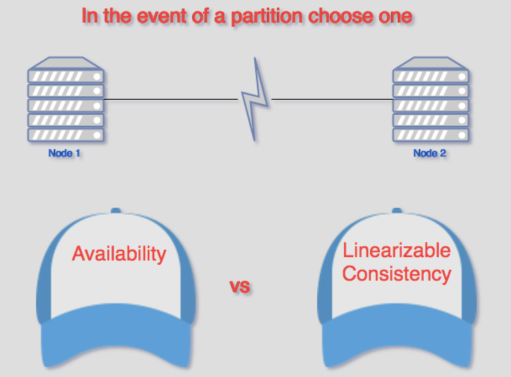

- Microservicios
- REST
- Serverless architecture
- Databasese
Microservicios
Long story short: Desacoplar una gran aplicación en varios módulos pequeños, más cohesivos...
Pros
- Agilidad y productividad: Cada servicio puede evolucionar de manera independiente (distintos lenguajes, bases de datos, deploys, protocolos de comunicación, etc ...)
- Escalabilidad*: Es posible agregar más servidores en el microservicio que más lo requiera
- resilience: Ya no tenemos un spf (single point of failure), los componentes pueden fallar de manera independiente sin afetar a otros
Cons
- Naturaleza distribuida: El desarrollo de una aplicatión orientada a microservicios se vuelve más complejo
- Equipo maduro: Para alcanzar la independencia el equipo debe ser capaz de manejar el ciclo de vida completo de una aplicación, cómo decisiones diseño, implementación, dbs, build, deploy, monitoreo, alertas, etc...
- Latencia: Es necesario realizar nuevas llamadas entre los distintos microservicios, agregando latencia.
Martin Fowler
One reasonable argument we've heard is that you shouldn't start with a microservices architecture. Instead begin with a monolith, keep it modular, and split it into microservices once the monolith becomes a problem.
Otras complicaciones
La granularidad que nos ofrecen los microservicios por lo general no se corresponde con lo que el cliente necesita.
Un cliente necesita interactura con muchos microservicios.
Por ejemplo, una página para los detalles de un producto necesitaría:
- Shopping Cart – Cantidad de items en el carrito de compra
- Order Service – Historial de pedidos hechos
- Catalog Service – Información básica del producto (descripción, imagen, precio, etc...)
- Review Service – Experiencias de otros usuarios con el vendedor
- Shipping Service – Información sobre el envío, deadlines, costos...
- Recommendation Service(s) – Servicio de recomendación
- Entre otros...

Desventajas
- Se deben realizar varias llamadas (cada request tiene un alto roundtrip, ya que el tráfico generado no es local, debe atravezar potencialemente varios paises)
- El refactor de los microservicios se torna complejo
- Es posible que todos los microservicios no usen protocolos web-friendly (por ejemplo, binary RPC)
- La información no esta diseñada para ser consumida por ese cliente solamente, por lo que puede haber más datos de los que realmente necesita
Solución: Api-gateway
Se realizan las llamadas a un único entry-point. Se puede ver como un patrón de diseño facade.
Puede tener otras responsabilidades como authenticación, monitoreo, seguridad, load balancing, caching de requests, etc...
Ejemplo de netflix

Otra variante: Backend for frontend

Otro problema: transacciones
Tenemos una aplicación segmentada entre varios microservicios, cada una con su propia base de datos.
Algunas transacciones de negocio pueden involucrar a varios servicios, por lo que se necesita de algún mecanismo que asegure la consistencia de los datos.
Solución: sagas
Una saga es una secuencia de transacciones locales, donde cada transacción actualiza una parte de la base de datos (a través del microservicio).
Al terminar de hacer la actualización parcial publica un evento que dispara a la próxima transacción.
Si alguna transacción falla, se ejecutan una serie de transacciones para deshacer los cambios realizados.
REST
Representational state transfer
Json sobre HTTP ?
REST es un estilo de arquitectura para sistemas distribuidos, expresado como un conjunto de restricciones que intenta minimizar la latencia y la comunicación de red mientras máximiza la independencia y la escalabilidad
Restricciones:
- Client-Server: Separa responsabilidades
- Stateless: Induce la escalabilidad, visibilidad y recuperación ante fallas parciales. Agrega latencia
- Cache: Aumenta la eficiencia
- Layered System
- Code-On-Demand (opcional): Permite extender la funcionalidad (js scripts)
- Uniform Interface: identificación de recursos y semántica de operación uniforme
Uniform Interface
Es la interfaz uniforme el elemento diferenciador de este estilo. Implica que todos los conectores del sistema deben ajustarse a las limitaciones de esta interfaz. Las cuatro restricciones de interfaz uniforme son:
- Identification of resources
- Manipulation of resources through representations
- Self-descriptive messages
- Hypermedia as the engine of application state (HATEOAS)
Uniform Interface
En términos prácticos, en la World Wide Web, estas restricciones corresponden a:
- URI (Uniform Resource Identifier)
- Solicitud HTTP y respuestas
- Encabezados HTTP con tipos MIME (Multipurpose Internet Mail Extensions)
- URI incrustado en un tipo de medio de comunicación
Hypermedia as the engine of application state (HATEOAS)
{
"content":[
{
"price":499.00,
"description":"Apple tablet device",
"name":"iPad",
"links":[
{
"rel":"self",
"href":"http://localhost:8080/product/1"
}
],
"attributes":{
"connector":"socket"
}
},
{
"price":49.00,
"description":"Dock for iPhone/iPad",
"name":"Dock",
"links":[
{
"rel":"self",
"href":"http://localhost:8080/product/3"
}
],
"attributes":{
"connector":"plug"
}
}
],
"links":[
{
"rel":"product.search",
"href":"http://localhost:8080/product/search"
}
]
}
Serverless architecture
Definicion 1: Una arquitectura tipo serverless se refiere a aplicaciones que dependen fuertemente de un servicio de backend (Baas), solamente ocupandose de la UI.
Definicion 2: Una arquitectura tipo serverless se refiere a aplicaciones que dependen de código que se ejecuta en containers efimeros (Function as a Service or “FaaS”).
A pesar del nombre, serverless no significa que la aplicación no corre en un servidor
FaaS nos da la posibilidad de ejecutar código en respuesta a algún evento, sin tener que preocuparnos por la complejidad de diseñar o mantener la infraestructura.
FaaS:
Podemos correr código backend sin tener que administrar nuestros propios servidores
No nos exige programar en algún lenguaje/framework particualar. Existe soporte para Python, Js, Java/Clojure/Scala, etc...
Al no tener servidores, cambia el deploy. Simplemente debemos subir el código al proveedor de Faas
Escalabilidad manejada por el proveedor
Estado
Al derivar del paradigma funcional, las funciones que definamos deben ser stateless.
Toda la información necesaria viaja en los parámetros.
Ejecución
Normalmente existen límites en los tiempos de ejecución de cada función (5 minutos para AWS Lambda)
No todas las tareas se ajustan a esta restricción (procesos batch)
Latencia en start up
El tiempo de respuesta ante algún evento depende de varios factores (frecuencia con que se invoca la función, cantidad lineas código, carga de los servidores, etc)
Funciones en JS o Pyhon pueden tardar 10 - 100 ms.
Funciones en Java pueden estar atadas a tiempos de la JVM, pudiendo llegar a mas de 10 segundos.
Esto puede ser una limitante, dependiendo de las necesidades que se tengan.
Faas vs Paas
If your PaaS can efficiently start instances in 20ms that run for half a second, then call it serverless
Pros
-
Costos:
- Se reducen los costos en cuanto a desarrollo (Baas)
- Costos operativos/infraestructura
- Costos para escalar (solamente se paga por lo que se utiliza). Ideal para requests ocacionales o tráfico inconsistente
- Optimizaciones: Una optimización en el código se traduce en un ahorro instantaneo de dinero
- Deployment
Cons
- Vendor control: Ya no tenemos control. Pueden cambiar los costos del servicio, cambiar el alcance de la funcionalidad brindada, algun upgrade de API, downtime, etc...
- Vendor lock-in: Posiblemente no sea fácil una migración entre distintos proveedores
- Seguridad: Se agranda la superficie de ataque
- Monitoreo y debugging
Databases
Varios modelos de bases de datos
- Relational: Mysql, MariaDb
- Key-value: Redis, CounchDb
- Document-oriented: Mongodb
- Column-oriented: Cassandra
- Graph-oriented: Neo4j
CAP theorem
El teorema CAP se aplica a sistemas distribuidos que almacenan información
Eric Brewer sostiene que existe un trade-off entre consistency, availability y partition tolerance
El teorema indica que solamente se pueden soportar dos de las tres propiedades mencionadas
Consistency
Cada lectura recibe el valor de la escritura más reciente.
La idea es que cada cliente tenga una misma vista de toda la información, como si el cluster fuese uno solo.
Availability
Cada nodo devuelve una respuesta (ya sea para una lectura o una escritura) en un tiempo razonable.
Para tener alta disponibilidad es necesario que cualquier nodo responda en un tiempo razonable.
Partition Tolerant
El sistema sigue operando a pesar de que los mensajes entre los nodos pueden llegar a perderse (o retrasarse), debido a fallas en la red.
La idea es poder recuperarse de estas fallas parciales.
Siguiendo este teorema nos encontramos bajo 3 casos:
CP (Consistent and Partition Tolerant): Sistemas que sacrifican la disponibilidad en casos de una partición de la red
AP (Available and Partition Tolerant) - Sistemas que siempre están disponibles, pero ante una partición de la red no pueden garantizar consistencia.
CA (Consistent and Available) - Sistemas que siempre estan disponibles y son consistentes. Un solo nodo de la red entra en esta categoría. Un solo nodo no necesita resolver los problemas relacionados a las particiones en la red. El único problema es que un solo nodo no forma un sistema distribuido.
Recordar que el teorema CAP se aplica a sistemas distribuidos que almacenan información.
En cualquier base de datos distribuida la tolerancia a fallas, por lo que al diseñar un sistema siempre se debe elegir entre consistencia y disponibilidad.
